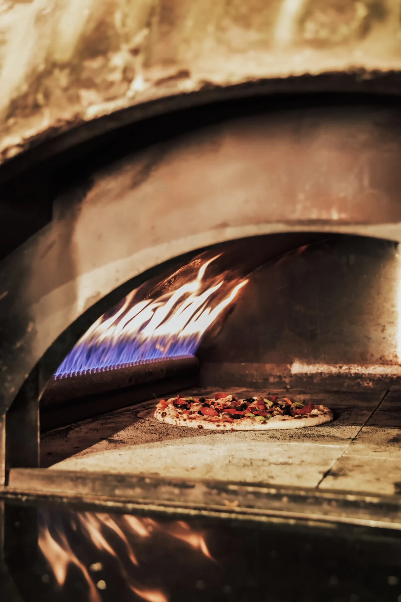
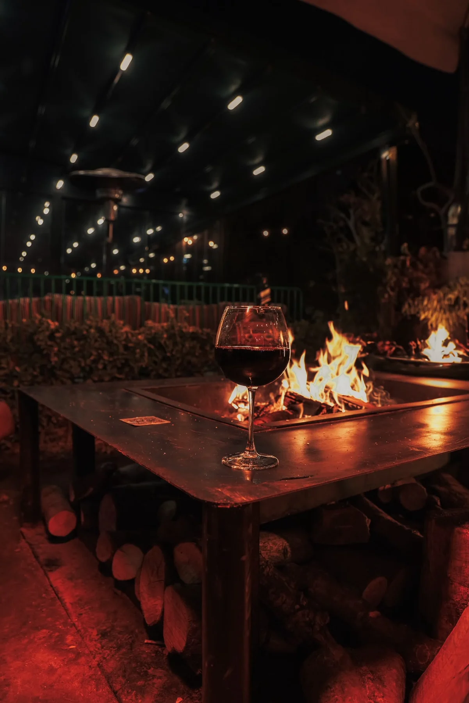
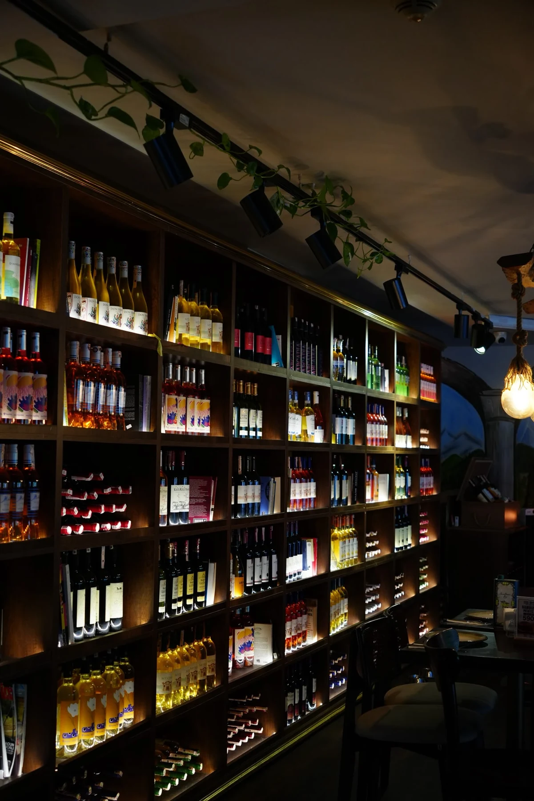

Mekânı keşfedinHER GÜN 12.00 — 02.00
Zekeriyaköy’de
bir akşam.
Taş fırının başından bahçedeki masaya. Egg Bistro, Zekeriyaköy’de yemek, kokteyl ve şarap için bir buluşma yeri.
Konum & iletişim
İçeriden
bir bakış.
Bahçede ateşin yanı, içeride ahşap masalar. İki kişilik bir akşam ya da arkadaşlarla yemek.
@eggbistrooSaatler
Her gün · 12.00–02.00